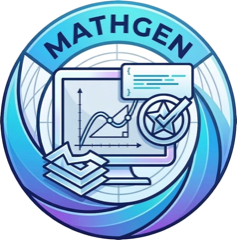
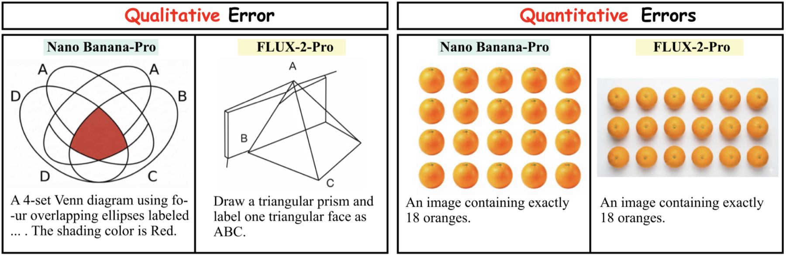

MathGenModern generative models can solve increasingly difficult mathematical problems in text, but many real use cases require answers to be expressed visually through diagrams, plots, geometric constructions, and symbolic layouts. MathGen asks a direct question: does mathematical competence persist when the answer must be rendered as an image?
We introduce MathGen, a benchmark of 420 curated problems across seven core mathematical domains. The benchmark contains 350 Clean-Scene problems and 70 paired Open-Scene problems. Each task is evaluated with a Script-as-a-Judge protocol: problem-specific executable checks verify numerical, geometric, structural, and logical constraints deterministically.
350 Clean-Scene problems plus 70 paired Open-Scene problems.
Counting, angles, fractions, functions, plane geometry, sets, and solid geometry.
Script-based judgments align strongly with graduate-student human annotations.
MathGen separates controlled diagrammatic math from realistic open-scene math. This paired design helps diagnose whether failures come from the core mathematical constraint, from scene complexity, or from both.

Script-as-a-Judge provides transparent, reproducible, fine-grained verification of mathematical correctness.
Exact counts and attribute-based counts for target objects.
Angle measures, angle relations, and geometric angle construction.
Fraction grids, proportional mappings, and ratio-preserving visual regions.
Coordinate axes, continuous curves, piecewise plots, and function relations.
Intersections, composite figures, and 2D geometric constructions.
Set operations, relations, membership, overlaps, and disjointness.
3D shapes, coordinates, projections, visibility, and occlusion.
Matched clean problems embedded in richer real-world visual contexts.
Main results on the 350-problem Clean-Scene set. Accuracy is reported for each domain with 50 problems per domain. Closed-source models lead, but even the strongest systems remain far from reliable mathematical rendering.
Best overall result, with at least 40% accuracy in every domain.
Strong on counting, fractions, and plane geometry, but weaker on sets, functions, and angles.
FLUX-2 is strongest among evaluated open-source models, highlighting the current gap.
| Model | Counting | Angle | Fraction | Function | Plane | Set | Solid | Overall |
|---|---|---|---|---|---|---|---|---|
| Diffusion Models | ||||||||
| SD-3-Medium Diffusion | 0.0 | 0.0 | 0.0 | 0.0 | 6.0 | 0.0 | 6.0 | 1.7 |
| SD-3.5-Medium Diffusion | 4.0 | 0.0 | 0.0 | 0.0 | 12.0 | 2.0 | 6.0 | 3.4 |
| SD-3.5-Large Diffusion | 12.0 | 0.0 | 2.0 | 0.0 | 12.0 | 2.0 | 4.0 | 4.6 |
| FLUX-2 Diffusion | 8.0 | 2.0 | 8.0 | 2.0 | 42.0 | 8.0 | 8.0 | 11.1 |
| PixArt-Sigma Diffusion | 10.0 | 0.0 | 2.0 | 0.0 | 12.0 | 2.0 | 8.0 | 4.9 |
| PixArt-XL-2 Diffusion | 0.0 | 0.0 | 0.0 | 0.0 | 14.0 | 0.0 | 4.0 | 2.6 |
| HiDream-I1 Diffusion | 6.0 | 0.0 | 0.0 | 2.0 | 4.0 | 2.0 | 6.0 | 2.9 |
| Qwen-Image Diffusion | 22.0 | 0.0 | 8.0 | 2.0 | 24.0 | 4.0 | 6.0 | 9.4 |
| Z-Image-Turbo Diffusion | 8.0 | 0.0 | 8.0 | 0.0 | 16.0 | 2.0 | 14.0 | 6.9 |
| Autoregressive Models | ||||||||
| Infinity-8B AR | 6.0 | 0.0 | 4.0 | 0.0 | 18.0 | 2.0 | 8.0 | 5.4 |
| GoT-R1-7B AR | 8.0 | 0.0 | 0.0 | 0.0 | 16.0 | 2.0 | 2.0 | 4.0 |
| Unified Models | ||||||||
| BAGEL Unified | 4.0 | 0.0 | 0.0 | 0.0 | 14.0 | 0.0 | 2.0 | 2.9 |
| show-o2-1.5B Unified | 0.0 | 0.0 | 0.0 | 4.0 | 18.0 | 0.0 | 2.0 | 3.4 |
| show-o2-7B Unified | 0.0 | 0.0 | 0.0 | 4.0 | 10.0 | 0.0 | 8.0 | 3.1 |
| Janus-Pro-1B Unified | 0.0 | 0.0 | 0.0 | 0.0 | 14.0 | 0.0 | 2.0 | 2.3 |
| Janus-Pro-7B Unified | 0.0 | 0.0 | 0.0 | 0.0 | 12.0 | 2.0 | 6.0 | 2.9 |
| BLIP3o-4B Unified | 4.0 | 0.0 | 2.0 | 0.0 | 14.0 | 2.0 | 8.0 | 4.3 |
| BLIP3o-8B Unified | 6.0 | 0.0 | 2.0 | 0.0 | 14.0 | 2.0 | 4.0 | 4.0 |
| OmniGen2-7B Unified | 4.0 | 0.0 | 2.0 | 0.0 | 12.0 | 2.0 | 8.0 | 4.0 |
| Closed-Source Models | ||||||||
| FLUX-2-Pro Closed | 22.0 | 10.0 | 20.0 | 18.0 | 54.0 | 16.0 | 20.0 | 22.9 |
| FLUX-Kontext-Pro Closed | 10.0 | 0.0 | 10.0 | 4.0 | 18.0 | 6.0 | 4.0 | 7.4 |
| Seedream 3.0 Closed | 14.0 | 0.0 | 2.0 | 0.0 | 24.0 | 6.0 | 8.0 | 7.7 |
| Seedream 4.0 Closed | 20.0 | 0.0 | 6.0 | 10.0 | 36.0 | 6.0 | 14.0 | 13.1 |
| Ideogram v3 Turbo Closed | 10.0 | 2.0 | 0.0 | 0.0 | 20.0 | 2.0 | 8.0 | 6.0 |
| Nano Banana Closed | 20.0 | 8.0 | 24.0 | 10.0 | 64.0 | 10.0 | 24.0 | 22.9 |
| Nano Banana Pro Closed | 48.0 | 54.0 | 50.0 | 70.0 | 72.0 | 42.0 | 40.0 | 53.7 |
| Imagen 4 Closed | 12.0 | 2.0 | 2.0 | 2.0 | 12.0 | 0.0 | 12.0 | 6.0 |
| Imagen 4 Ultra Closed | 20.0 | 6.0 | 16.0 | 4.0 | 42.0 | 8.0 | 16.0 | 16.0 |
| GPT-Image-1 Closed | 32.0 | 12.0 | 44.0 | 16.0 | 68.0 | 20.0 | 24.0 | 30.9 |
| GPT-Image-1.5 Closed | 56.0 | 24.0 | 54.0 | 22.0 | 70.0 | 20.0 | 28.0 | 39.1 |
Nano Banana Pro reaches 53.7% overall, while most open-source systems remain below 10%.
Models can be strong on counting or plane geometry while failing functions, angles, or set relations.
Realistic visual context often reduces exact mathematical correctness, even when the underlying constraint is unchanged.

Matched Clean-Scene and Open-Scene examples show how realistic context stresses mathematical fidelity.

Representative cases illustrate that visually convincing outputs may still violate exact constraints.

Error ratios distinguish qualitative structural failures from quantitative numerical or proportional failures.

Common failures include incorrect counts, broken proportions, imprecise angles, invalid plots, and wrong set structure.
@misc{liu2026mathgen,
title={MathGen: Revealing the Illusion of Mathematical Competence through Text-to-Image Generation},
author={Liu, Ruiyao and Shen, Hui and Zhang, Ping and Hsieh, Yunta and Zhang, Yifan and Xu, Jing and Han, Qi and Li, Junchen and Lu, Jiawei and Ma, Jianing and Mo, Jiaqi and Chen, Sicheng and Zhang, Zhen and Wan, Zhongwei and Xiong, Jing and Wang, Xin and Liu, Ziyuan and Cao, Hangrui and Wong, Ngai},
year={2026},
eprint={2603.27959},
archivePrefix={arXiv},
primaryClass={cs.CV},
url={https://arxiv.org/abs/2603.27959}
}